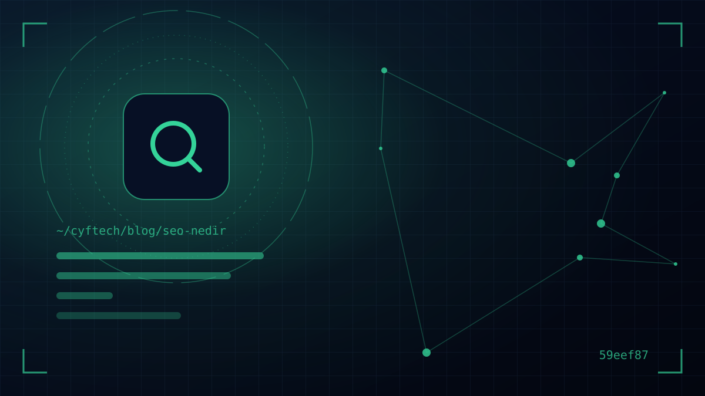

您的大多数客户在找到您之前，都会先在 Google 上输入些什么：“附近的会计师”“企业网站价格”“小区物业费软件”。SEO 就是决定在搜索发生的那一刻，您的网站会不会出现在他们面前的那项工作。
本文将不堆砌技术术语地回答什么是 SEO：Google 如何发现网页、依据什么排名、2025–2026 年人工智能摘要（AI 概览和 AI 模式）如何改变了游戏规则，以及作为企业主，您在第一个月应采取哪些步骤。
我们还有三篇深入探讨该主题的文章，会在适当的地方为您指引。不妨把本文看作展示全貌的入门篇。
什么是 SEO？简明定义
SEO 是英文 Search Engine Optimization 的缩写，即搜索引擎优化。其目标是让您的网站无需付费投放广告，也就是以自然方式，在相关搜索中获得更高的曝光。
Google 自己的定义也与此相近：SEO 是帮助搜索引擎理解您的内容，并帮助用户找到您的网站、决定点击它的工作。请注意，定义中有两方：搜索引擎和人。好的 SEO 会同时服务于两者。
土耳其的搜索市场大部分由 Google 占据。根据 Statcounter 2026 年 9 月的数据，Google 在土耳其的搜索引擎份额约为 73%，Yandex 约为 25%。因此本指南以 Google 为准；不过文中所述的大部分原则同样适用于 Yandex。
Google 如何发现、存储网页并为其排名？
Google 搜索中心的文档将这一过程分为三个阶段。SEO 中几乎所有技术问题都涉及其中某个阶段：
- 1. 抓取（crawling）—名为 Googlebot 的自动程序会顺着链接和站点地图，发现并下载新的和更新过的网页。
- 2. 索引（indexing）—Google 分析网页中的文字、图片和标题，理解网页的主题，并将其存入庞大的数据库（索引）。并非每个被抓取的网页都会被编入索引。
- 3. 呈现结果（serving）—当有人搜索时，Google 会从索引中的网页里挑选出它认为对此人最有用的结果并进行排序。这里有数百项因素在起作用，比如搜索的含义、位置、语言和设备。
实际结论是：如果 Google 无法访问您的网页（抓取）、无法理解您的网页（索引），或者您的网页回答问题不如竞争对手（排名），您就不会被看到。知道问题出在哪个阶段，也就决定了解决办法。
Google 还明确表示：无法通过向 Google 付费来获得更靠前的排名。广告是一个独立的区域，不影响自然搜索结果。
SEO 的三大支柱：技术、内容和权威
SEO 工作通常分为三个方面。忽视其中一个，另外两个的效果也会受限。
| 支柱 | 是什么意思？ | 工作示例 |
|---|---|---|
| 技术 SEO | 让 Google 能够顺利抓取网站并编入索引 | robots.txt、站点地图、HTTPS、速度、移动端适配、重定向 |
| 内容与页面 SEO | 用正确的页面为正确的问题提供优质的答案 | 关键词与意图分析、标题标签、正文、图片、内链 |
| 权威（站外 SEO） | 您的网站在外部世界中的知名度和可信度 | 自然外链、品牌提及、评价、行业目录 |
如果您想逐项检查技术方面， 可以按照我们的技术 SEO 检查清单 一步步执行。如果您有实体店，或者服务于特定区域，权威这一支柱的很大一部分体现在地图和评价上；我们在 本地 SEO 与 Google 商家资料指南中 对此做了详细介绍。
关键词与搜索意图：选对问题
SEO 的起点是了解客户用哪些词进行搜索。但比关键词本身更重要的，是其背后的意图。关于同一主题的两次搜索，想要的东西可能截然不同：
- 信息意图：“什么是 SEO”“物业费怎么计算”。用户想学习，期待看到指南和说明性文章。
- 商业调研：“最好的点单软件”“WordPress 还是定制开发”。用户在比较各种选项。
- 交易意图：“我想做一个网站”“餐厅 POS 系统价格”。用户已接近购买或询价。
- 本地意图：“Kadıköy 牙科诊所”“附近的汽修店”。用户在寻找附近的商家。
每种意图都需要不同类型的页面。试图把服务页面展示给寻求信息的人，或把博客文章展示给想要报价的人，是行不通的。在 Google 中搜索一个关键词，看看第一页的结果，是了解该关键词意图的最快方法。
为什么长尾关键词很有价值？
在“网站”这类通用关键词上竞争非常激烈，而且搜索者的需求也不明确。“伊斯坦布尔企业网站建设价格”这样的长尾搜索量较低，但搜索者清楚自己想要什么。对于新网站和小网站来说，切实的收获通常来自这里。
Google 认为什么样的内容是“有用”的？
Google 明确写道，其排名系统旨在优先展示为帮助用户而创作的可靠内容。《创作有用、可靠、以用户为中心的内容》一文中所提问题的核心是：这个页面是否真正帮到了读者，还是只为搜索引擎而写？
在这一评估中，您会经常听到的缩写是 E-E-A-T：经验（experience）、专业性（expertise）、权威性（authoritativeness）和可信度（trust）。它们不是逐项打分的指标，而是优质内容所具备的特质。在企业网站上，您可以这样体现：
- 真实的项目案例、自己拍摄的照片和具体的数据
- 说明文章作者是谁、基于哪些经验的信息
- 清晰的联系方式、地址、公司信息和客户案例
- 不重复竞争对手说过的话，而是加入自己的知识和观点
人工智能搜索如何影响 SEO？
2025 年和 2026 年是搜索领域发生巨变的年份。Google 的人工智能摘要（AI Overviews，土耳其语中也称 AI Bakışı）和对话式的 AI 模式，自 2026 年 2 月起在土耳其逐步上线。如今，许多问题的答案会连同来源链接一起，以摘要形式显示在结果列表上方。
这正在改变点击行为。皮尤研究中心（Pew Research Center）2025 年基于美国 900 名成年人浏览数据的研究显示，在显示人工智能摘要的搜索中，用户点击传统结果的比例为 8%，而在没有摘要的搜索中这一比例为 15%。也就是说，尤其在简单的信息类问题上，预计点击量会减少。
那该怎么做？Google 的《AI 功能与您的网站》一文说得很明确：要出现在 AI 概览或 AI 模式中，没有额外要求，也无需特殊优化。网页只要已被编入索引并符合显示摘要片段的条件即可；不需要专门的人工智能文件或特殊的 schema 标记。基本的 SEO 实践在这里同样适用：
- 把重要信息写成文字，而不是放在图片里
- 明确提出问题，在第一段直接回答，再展开细节
- 加入基于自身经验、别处找不到的信息；这正是摘要希望作为来源链接的内容
- 人工智能流量不会在 Search Console 中作为单独报告呈现，而是包含在“网页”搜索类型的效果数据中；请据此解读您的统计数据
在人工智能时代，SEO 并没有消亡；平庸内容的价值下降了，真正有用的内容价值上升了。
SEO 多久能见效？如何衡量？
坦白地说：视情况而定。如果是新网站、竞争激烈的行业，且权威需要从零积累，可观的自然流量通常需要几个月。而清除某个技术障碍（例如误留了“noindex”的页面）可能在几周内就见效。Google 本身也建议您向 SEO 顾问询问“你们预计在多长时间内取得哪些成果？”，并补充说：没有人能保证在 Google 上排名第一。
衡量效果，两个免费工具就足够了：
- Google Search Console：显示您在哪些搜索中出现、展示了多少次、获得了多少点击，以及索引方面的问题。
- Google Analytics 4：显示访客在网站上做了什么，是否填写了表单或打了电话。
不要用排名来衡量成功，而要用业务成果：来自自然搜索的询价、来电和销售。在需要快速见效的阶段，如何平衡广告与 SEO， Google Ads 还是 SEO？ 一文。
企业前 30 天的行动清单
为不知道从哪里开始做 SEO 的企业提供一个可执行的顺序：
- 第 1 周 —安装 Google Search Console 和 Analytics，提交站点地图，记录“网页索引编制”报告中的错误。
- 第 2 周 —针对每项服务，列出客户会使用的 3–5 个搜索词，并检查每个搜索词是否都有对应的页面。
- 第 3 周 —根据这些搜索词重写主要页面的标题（title）和描述标签、H1 标题及正文。如果您做本地业务，请验证您的 Google 商家资料。
- 第 4 周 —发布第一篇回答客户最常见问题的指南文章，并添加指向服务页面的内链。
如果您的网站即将新建，从一开始就打好这些基础，要比事后补充便宜得多； 我们的《建企业网站之前必须了解的事》 一文是很好的起点。
- Search Console 和 Analytics 是否已安装并验证？
- 每项服务是否都有单独且内容充实的页面？
- 页面标题和描述是否反映了客户的搜索词？
- 网站在手机上是否打开迅速、使用顺畅？
- 重要信息是否以文字而非图片形式呈现？
- 您是否用询价和销售而非排名来衡量成功？
常见问题
什么是 SEO？它有什么用？
SEO 即搜索引擎优化，是为了让您的网站无需付费投放广告，就能在 Google 等搜索引擎的相关搜索中获得更高曝光而开展的技术、内容和权威工作的总和。其目标是让正在寻找您的潜在客户访问您的网站。
SEO 可以自己做吗？
基础步骤可以自己完成：安装 Search Console、调整页面标题、开通 Google 商家资料，以及撰写回答客户问题的内容。但在技术问题、网站架构和竞争激烈的行业方面，借助经验丰富的团队能节省时间。
SEO 多久能见效？
这取决于网站的历史、行业竞争程度和初始技术状况。清除技术障碍可能在几周内见效，而新网站获得可观的自然流量通常需要几个月。对于承诺确切时间或保证排名第一的服务，请保持谨慎。
人工智能搜索终结了 SEO 吗？
没有。据 Google 介绍，出现在 AI 概览和 AI 模式中没有额外要求；已被编入索引且提供优质内容的网页可以作为来源出现在这些摘要中。简单信息类问题的点击量可能会减少，但原创、基于经验的内容价值正在提升。
SEO 和 Google Ads 有什么区别？
在 Google Ads 中，您按点击付费，可以立即出现在广告位上，预算用完曝光就停止。SEO 不需要为点击付费，但取得成果需要时间和精力；获得的曝光更加持久。许多企业会两者结合使用。
结语
总结一下 SEO：确保 Google 能访问您的网站，写出最能回答客户问题的页面，并随着时间积累信任。人工智能摘要并没有改变这些原则，只是提高了满足于平庸内容的代价。
CYF Tech 在建站时，并不把 SEO 当作事后追加的服务，而是将其作为架构的一部分。如果您想知道现有网站为什么搜不到，或者希望新网站从一开始就打好 SEO 基础， 给我们留言；我们一起来看看。
- Google 搜索中心 — SEO 新手指南
- Google 搜索中心 — Google 搜索的运作方式
- Google 搜索中心 — 创作有用、可靠、以用户为中心的内容
- Google Search Central — AI features and your website
- Google 搜索中心 — 您是否需要 SEO？
- Google 搜索中心 — 垃圾内容政策
- Pew Research Center — Google users are less likely to click on links when an AI summary appears (2025)
- Statcounter — 土耳其搜索引擎市场份额
- Webrazzi — Google AI 模式和 AI 概览登陆土耳其（2026 年 2 月）